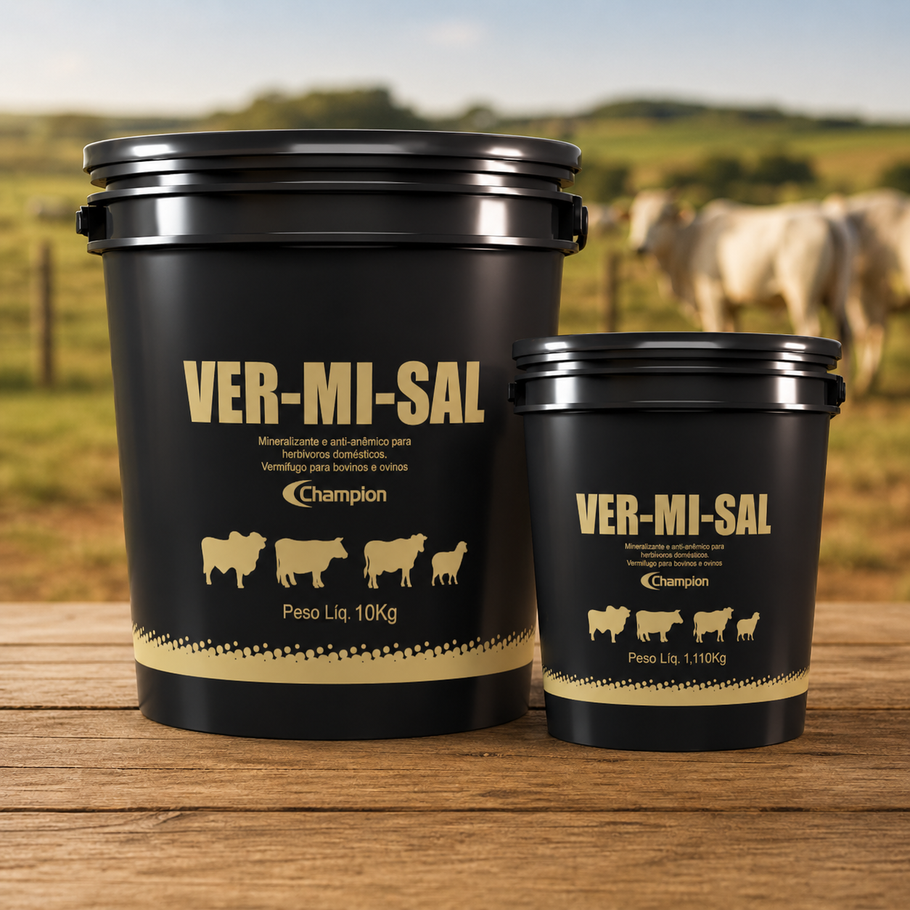

A verminose é uma perda silenciosa: o animal come e não engorda. Controlar bem os vermes é uma das ações de maior retorno na pecuária — especialmente em bezerros e na recria, as categorias mais sensíveis.
Sintomas de verme no gado
Os sinais nem sempre são óbvios, mas os mais frequentes são:
- Pelo opaco e arrepiado, animal "sem viço";
- Magreza mesmo com pasto disponível;
- Diarreia e fezes amolecidas;
- Anemia — mucosas e gengivas pálidas;
- Atraso no crescimento de bezerros e novilhas.
Quando vermifugar: o calendário
Não há uma receita única. Há duas filosofias que se complementam:
- Vermifugação estratégica: concentra os tratamentos nos momentos de maior impacto — tipicamente na entrada da seca, quando a carga parasitária e a pressão sobre o animal são maiores.
- Vermifugação contínua (cocho): mantém a carga parasitária baixa o ano todo, fornecendo o vermífugo junto ao sal mineral, sem apartar o gado.
A melhor escolha depende da sua realidade — clima, lotação e categoria. Defina o protocolo com o responsável técnico.

VER-MI-SAL — vermifugação contínua no cocho
Une o controle de verminose à mineralização completa, de forma contínua e sem manejo. Veja a indicação na página do produto.
Ver o VER-MI-SALVermifugação de bezerro
Bezerros e animais em recria são os mais prejudicados pela verminose, porque ela compromete justamente a fase de maior crescimento. Por isso costumam entrar cedo nos programas de controle. A idade correta de início e o produto adequado devem seguir a bula e a orientação do responsável técnico — não improvise dose nem produto em animais jovens.
Vermífugo de cocho x injetável
Não é rivalidade, é estratégia combinada:
- Cocho: ação contínua, sem manejo, mantém a carga baixa e protege o ganho de peso no dia a dia.
- Injetável: efeito rápido e pontual, útil em momentos de alta infestação ou na chegada de animais novos.
Como evitar a resistência ao vermífugo
O uso repetido do mesmo princípio ativo seleciona vermes resistentes — e aí o produto "para de funcionar". Para preservar a eficácia:
- Faça rotação de princípios ativos ao longo do ano;
- Use a dose correta (subdosagem acelera a resistência) — calcule pelo peso;
- Evite vermifugar sem critério; combine estratégia e diagnóstico;
- Quando possível, monitore com exame de fezes (OPG).
Para acertar a dose por peso e número de cabeças, use a calculadora de dose.
Perguntas frequentes
Quais os sintomas de verme no gado?
Pelo opaco, magreza com pasto, diarreia, anemia (mucosas pálidas) e atraso de crescimento em bezerros.
De quanto em quanto tempo vermifugar?
Depende da categoria e da estratégia (estratégica x contínua no cocho). Defina o protocolo com o responsável técnico.
Vermífugo de cocho substitui o injetável?
São complementares: o cocho mantém a carga baixa continuamente; o injetável dá um efeito pontual. Alternar ajuda contra resistência.
Como evitar a resistência?
Rotação de princípios ativos, dose correta (sem subdosar) e uso com critério.